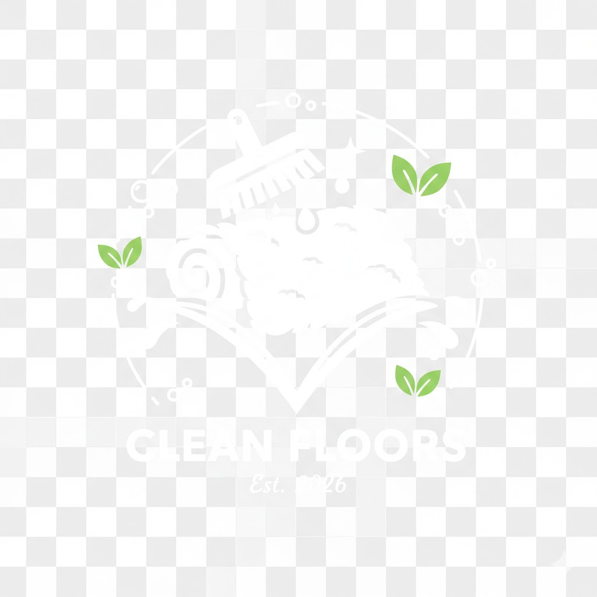

Professional Tile & Grout Cleaning in Cape Town
Restore the bright, hygienic look of your tiled floors, kitchens, and bathrooms. Our deep scrubbing and extraction process removes embedded dirt, cooking grease, soap scum, and discolouration from porous grout lines that standard mopping cannot touch.
Deep Cleaning For All Tiled Spaces
We clean ceramic, porcelain, slate, and quarry tile surfaces across residential homes and commercial premises.
Deep Grout Line Restoration
Porous grout absorbs mop water and dirt over time. Our mechanical agitation lifts deep-seated black grime, restoring original grout brightness.
Kitchen Grease & Grime Removal
Specialized emulsifiers break down sticky airborne cooking oils, food spills, and greasy traffic films from kitchen tiles.
Bathroom Scum & Mildew Lift
Eliminates stubborn soap scum, hard water mineral deposits, and bathroom humidity mildew from wall and floor tiles.
Eco-Safe & Non-Acidic
Our solutions protect your tile glaze, fixtures, and surrounding skirting boards without producing noxious fumes or hazardous residues.
Why Mopping Alone Leaves Grout Dirty
Standard string and sponge mops dissolve surface dust into murky wash water, which inevitably runs off smooth tile faces and pools into recessed grout lines. Because grout is naturally porous like concrete, it absorbs the dirty water like a sponge. Our machine scrubbing breaks the surface tension and immediately extracts the muddy slurry away into waste tanks.
-
Restores original grout colour without harsh regrouting -
Removes slippery detergent films that attract new dirt -
Fast drying floors ready to walk on shortly after service -
Available for homes, apartments, restaurants, and retail spaces

Frequently Asked Questions
Common questions regarding tile and grout deep cleaning.
How long does the tile and grout cleaning process take?
For an average kitchen or bathroom, cleaning typically takes 1 to 2 hours. Larger living areas or full-home tile restoration may require 3 to 4 hours depending on the square meterage and degree of soil compaction.
Will the cleaning damage my tile glaze or dislodge grout?
No. We select non-abrasive rotary pads and pH-calibrated solutions specifically tailored for your tile type. Existing structurally sound grout is thoroughly cleaned without erosion or chipping.
How do I get a quote for my tiled floors?
Send a photo of the area and approximate room dimensions via WhatsApp at 067 735 2364. We will reply promptly with a clear, all-inclusive price quote.
Bring Your Tiled Floors Back to Life
Schedule your tile and grout deep clean today with Quinton Chinoz Projects in Cape Town.